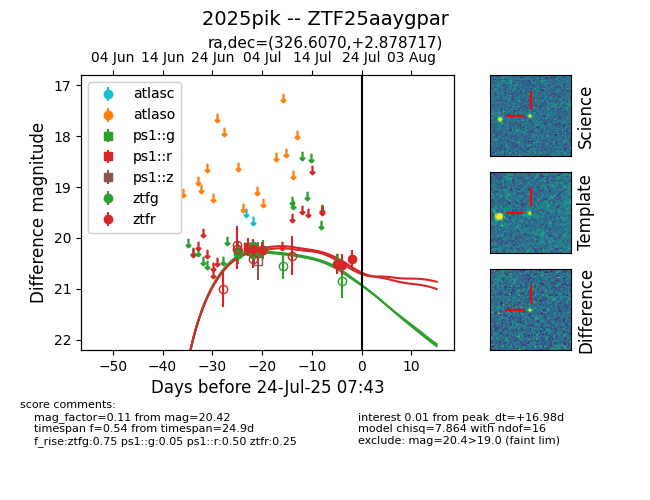

Target ZTF25aaygpar at 2025-07-24 07:43, see:
FINK: fink-portal.org/ZTF25aaygpar
Lasair: lasair-ztf.lsst.ac.uk/objects/ZTF25aaygpar
ALeRCE: alerce.online/object/ZTF25aaygpar
TNS: wis-tns.org/object/2025pik
YSE: ziggy.ucolick.org/yse/transient_detail/2025pik
alt names
ZTF25aaygpar (ztf,fink)
2025pik (tns,yse)
coordinates:
equatorial (ra, dec) = (326.6070,+2.87872)
galactic (l, b) = (59.4247,-36.28015)
photometry
last ps1::g=20.27, ps1::r=20.18, ztfg=20.23, ztfr=20.42
2 ps1::g, 1 ps1::r, 5 ztfg, 5 ztfr detections
